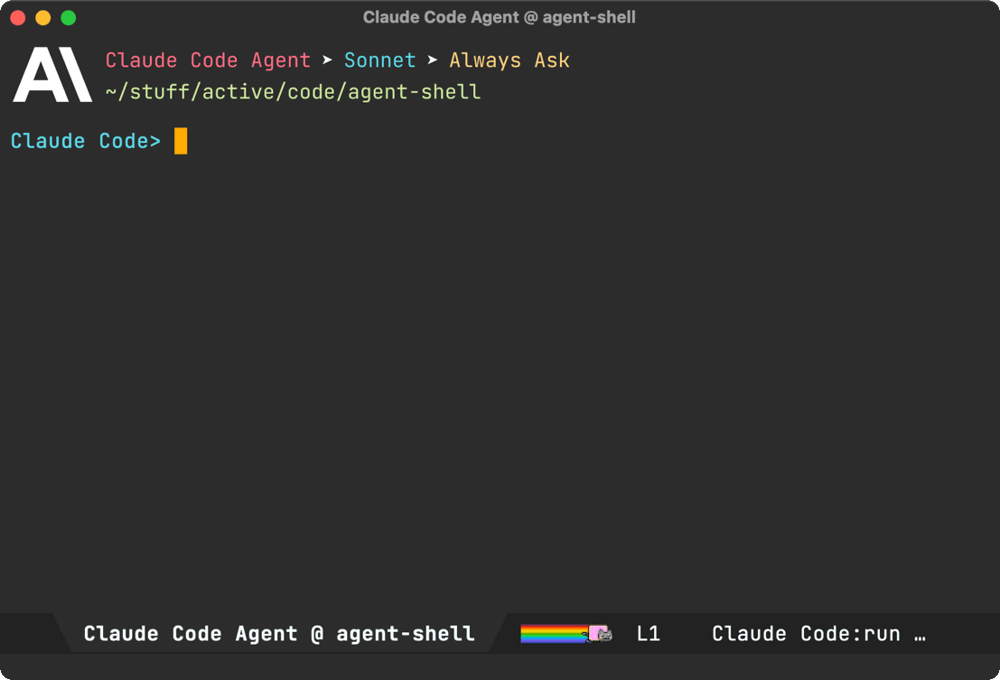
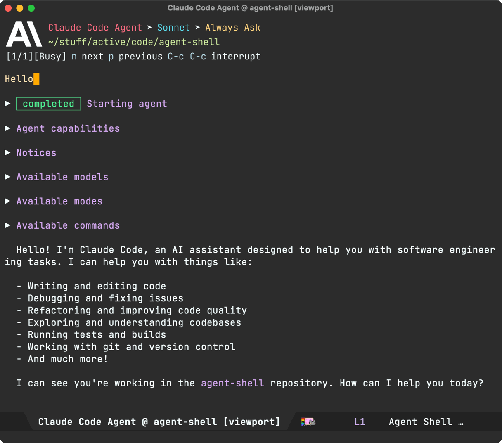
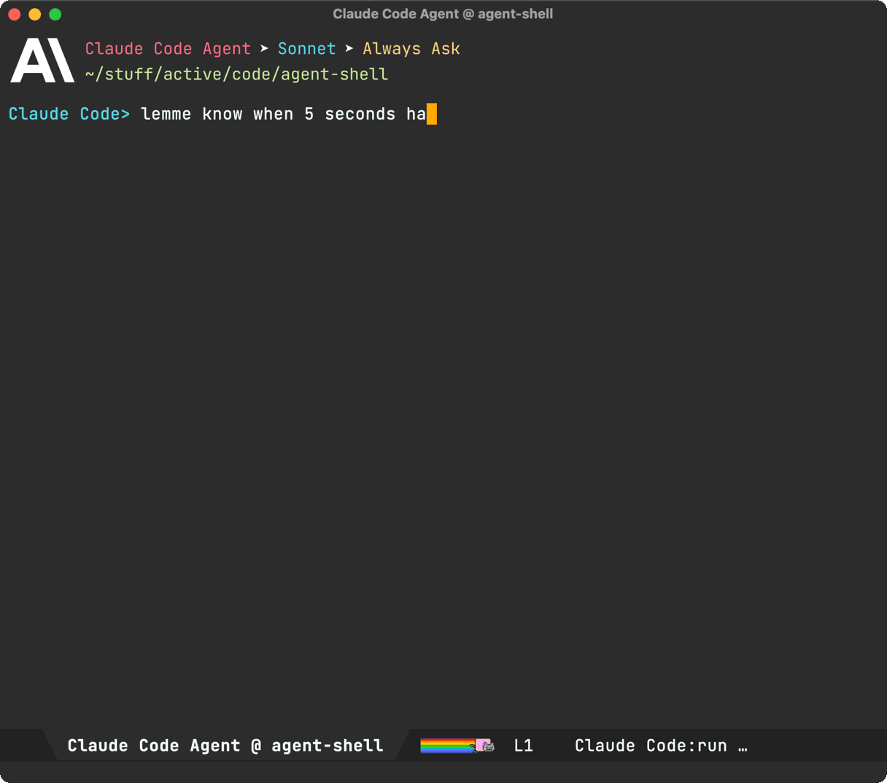
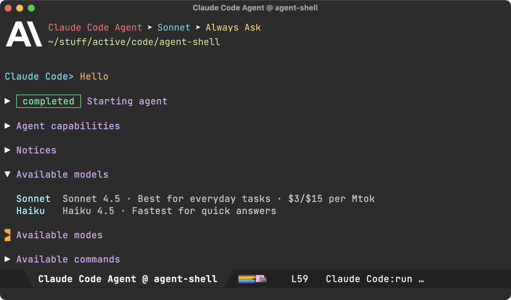
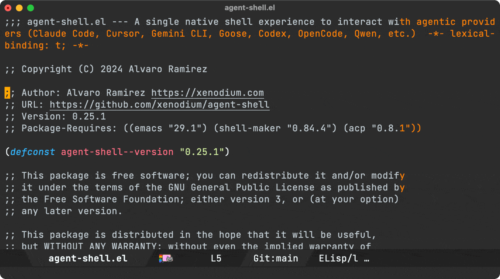
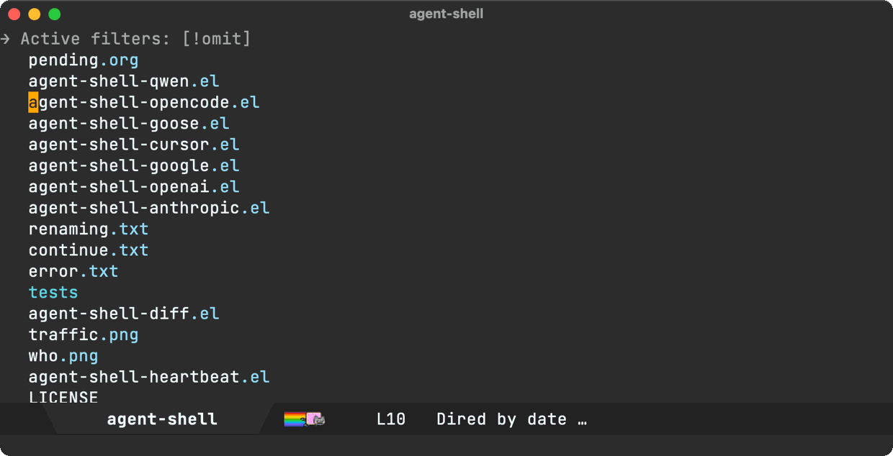
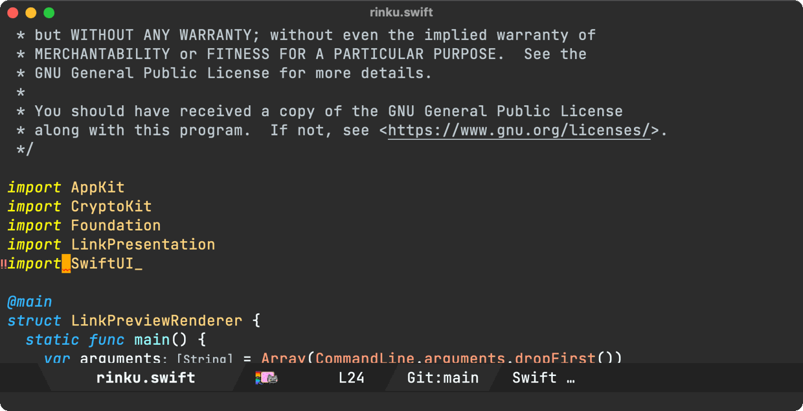
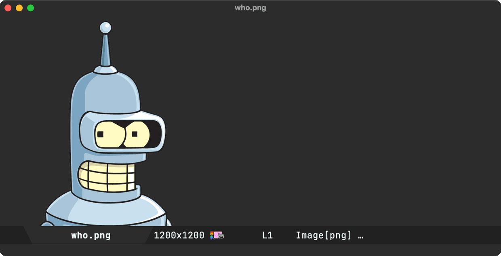
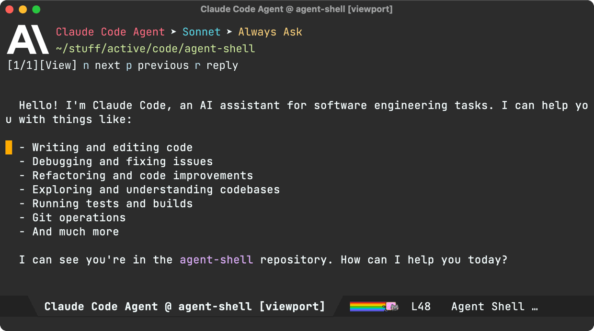

Álvaro Ramírez
agent-shell 0.25 updates
It's been a little while since the last agent-shell blog post detailing changes, so we're naturally due another one detailing the latest features.
What's agent-shell?
A native Emacs shell to interact with any LLM agent powered by ACP (Agent Client Protocol).
So what's new?
Let's go through the latest changes…
Viewport/compose (experimental)
The biggest change is the new experimental viewport/compose mode. While agent-shell's comint shell experience has its benefits, some folks may opt for a more familiar buffer experience, that is less shell-like.
There are perhaps 3 defining characteristics in the new viewport/compose feature:
- A dedicated compose buffer: You get a full, multiline buffer dedicated to crafting prompts. I personally find this mode of operation more natural (no need to watch out for accidental submissions via RET), but also opens up the possibility to enable your favourite minor modes that may not play nice with
comint. You can launch compose buffers viaM-x agent-shell-prompt-compose, edit your prompt, and when you're ready, submit with the familiarC-c C-cbinding.

- Viewport: I've experimented with shell viewports before and also added a similar experience to chatgpt-shell. This compose/viewport UX quickly became my primary way of interacting with non-agent LLMs. This is a read-only buffer typically displaying the latest agent interaction. Use
n/pto navigate through current interaction items. Usef/bto switch through pages/interactions. - Auto-modal: Compose and viewport modes complement each other and offer automatic transition between read-only and editable (compose) buffers. From a viewport, you can always press
rto reply to the latest interaction. When replying, you automatically go into edit/compose mode. When submitting viaC-c C-c, you automatically transition into viewport (read-only) mode.

While you can use M-x agent-shell-prompt-compose at any time to compose multi-line prompts and send from the shell, to get the compose/viewport hybrid experience, you need to enable with (setq agent-shell-prefer-viewport-interaction t). From then on, M-x agent-shell will favor the compose/viewport experience. You can always jump between viewport and shell with C-c C-o.
Prompt queueing (experimental)
agent-shell buffers now offer the ability to queue additional prompts if the agent is busy. Use M-x agent-shell-queue-request to and M-x agent-shell-remove-pending-request to queue and remove requests.

Session model/mode
You can now change models via M-x agent-shell-set-session-model (C-c C-v), when supported by the agent.
For Anthropic users, we now have agent-shell-anthropic-default-model-id and agent-shell-anthropic-default-session-mode-id to set default agent model and modes. You can view available values by expanding shell handshake items.

If keen on using defaults for a different agent, please file a feature request.
Set preferred agent
By default, launching via M-x agent-shell, prompts users to select one of the supported agents. You can now skip this by setting your preferred agent (thank you Jonathan).
(setq agent-shell-new-shell-config (agent-shell-anthropic-make-claude-code-config))
Automatic transcripts
While shell-maker automatically prompts users to save content when killing agent-shell buffers, its integration was a little clunky with agents. Elle Najt's agent-shell-specific implementation is now enable by default, saving Markdown transcripts to project/.agent-shell/transcripts. When launching new shells, you should see a message like:
Created project/.agent-shell/transcripts/2025-12-17-22-07-38.md
You can always open the current transcript via M-x agent-shell-open-transcript.
To disable the new transcript generation use:
(setq agent-shell-transcript-file-path-function nil)
MCP servers
Jonathan Jin introduced agent-shell-mcp-servers, enabling folks to add MCP servers to their agents.
For example:
(setq agent-shell-mcp-servers '(((name . "notion") (type . "http") (headers . []) (url . "https://mcp.notion.com/mcp"))))
Buffer search
DWIM context
When invoking M-x agent-shell, active region, flymake errors, dired and image buffers are now automatically considered and brought over to agent-shell buffers to be considered while crafting prompts.




There's one more. From a viewport buffer, selecting a region and pressing "r" (for reply) brings the selection over to the compose buffer as blockquoted text.

Cursor support (migrated to Mike Moore's adapter)
We've migrated Cursor agent support to use Mike Moore's ACP Adapter.
Install with:
npm install -g @blowmage/cursor-agent-acp
New related packages
- Paul Nelson built agent-shell-attention.el offering a mode line attention indicator.
- Julian Hirn built agent-review introducing a streamlined workflow.
Bug fixes
- #106: Use replace-buffer-contents instead of erase-buffer/insert
- #127: No longer possible to select the Anthropic model used by Claude Code
- #142: [bug] Crash during message streaming: markdown overlay receives nil positions
- #143: gemini 0.17.1 requires authMethod to authenticate (fix by Andrea)
- #144: Make collapsible indicator keymap customizable
- #145: Unable to enter Plan Mode until after first message is sent
- #150: Warning (undo): Buffer 'Codex Agent @ …' undo info was 25664948 bytes long
- #154: Gemini CLI doesn't need authorization if already logged in
Pull requests
Thank you to all contributors for these improvements!
- #125: Fix error when viewing proposed diffs (Nat Page)
- #129: Support setting a preferred agent config (Jonathan Jin)
- #138: Enable specifying MCP server configurations via custom variable (Jonathan Jin)
- #139: Document MCP server config functionality (Jonathan Jin)
- #140: README: Add MELPA badge + expand install instructions (Jonathan Jin)
- #141: Add keybindings to cycle/set session mode (Jonathan Jin)
- #149: Use fixed-pitch for ascii art logos (Mark A. Hershberger)
- #155: Give the new custom flag to gemini for skipping the authorization (ccQpein)
Lots of other work ❤️😅
Beyond what's showcased, much love and effort's been poured into polishing the agent-shell experience. Interested in the nitty-gritty? Have a look through the 122 commits since the last blog post.
Make the work sustainable
If agent-shell or acp.el are useful to you, please consider sponsoring development. LLM tokens aren't free, and neither is the time dedicated to building this stuff ;-)